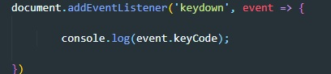
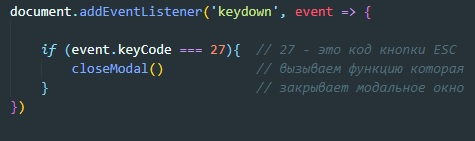

Что бы отследить собитые нажатия определенной кнопки на клавиатуре (например для того что бы закрывать модальные окна по нажатии на ESC) можно воспользоваться вот такой функцией
Здесь event.keyCode возвращает код нажатой клавиши, что бы производить действие по нажатии на кнопку ESC можно задать условие
Многие сенсорные экраны позволяют обнаруживать несколько касаний одновременно. У данных событий нет единого связанного с ними набора координат. Вместо этого их объекты событий имеют свойство touch содержащее массивоподобное множество точек каждая из которых имеет собственное свойство clientX и clientY, pageX и pageY
Скролл можно слушать не только на document, но и на любом элементе, который имеет скролинг
Так же можно отслеживать события прокрутки колесика мыши, даже если у элемента скрола по факту нет. В этом нам поможет событие wheel. Что бы понимать куда мы крутили колесико мыши, у объекта события есть свойство - wheelDelta, при прокрутки вниз оно получает значение = -120, а при прокрутки вверх = 120